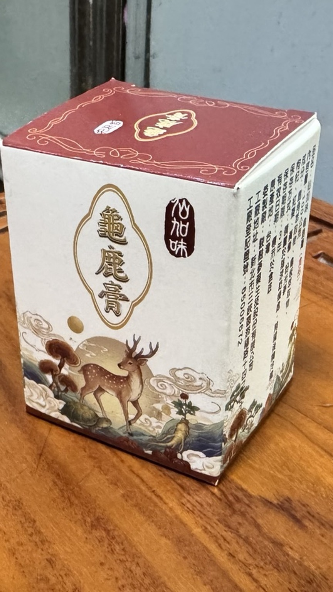

規格
100g／罐

直接回答
100g／罐
鹿角萃取物、龜板萃取物、枸杞、紅棗、黃耆、粉光蔘
想固定安排、喜歡小匙取用或熱水化開的人
使用方式
保存方式
比較重點
龜鹿膏適合小匙取用或熱水化開，能自行調整濃淡；龜鹿飲則是開瓶或開封即可飲用，準備步驟較少。
常見問題
先看規格、使用方式與保存；價格與活動請由官方 LINE 確認。
可以，也可加入約100～300mL熱水化開，調至適合溫度後飲用。
建議安排在早上或下午，並依個人飲食習慣與產品標示使用。
開封後請密封冷藏，並使用乾淨湯匙取用。
資料更新：2026-07-08